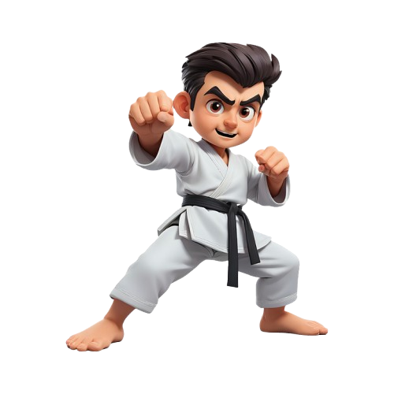

Karate esportivo
O karate olímpico vêm se destacando após sua participação nas olimpíadas de Tóquio em 2020
Quais os benefícios do Karate ?

A prática do Karate fortalece o corpo, aprimora a mente e desenvolve
disciplina para superar qualquer desafio.
Transforme-se com uma arte marcial que une
Tradição, Autodefesa e Equilíbro!